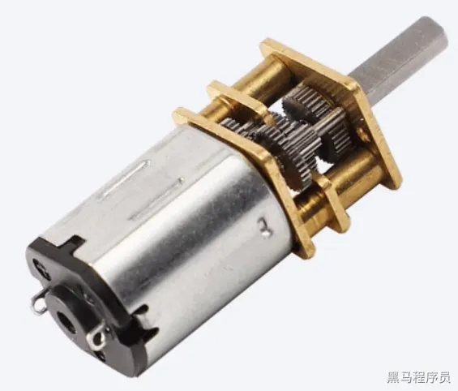
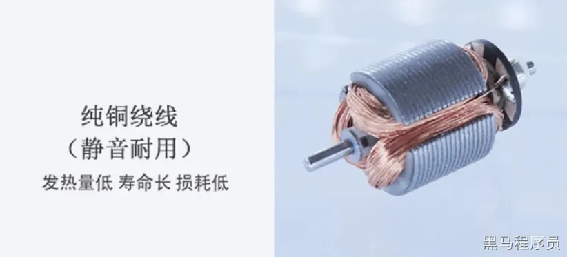
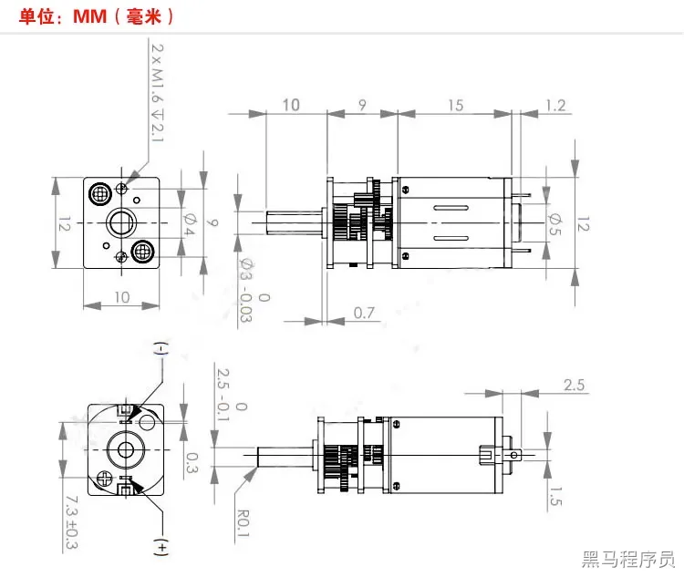
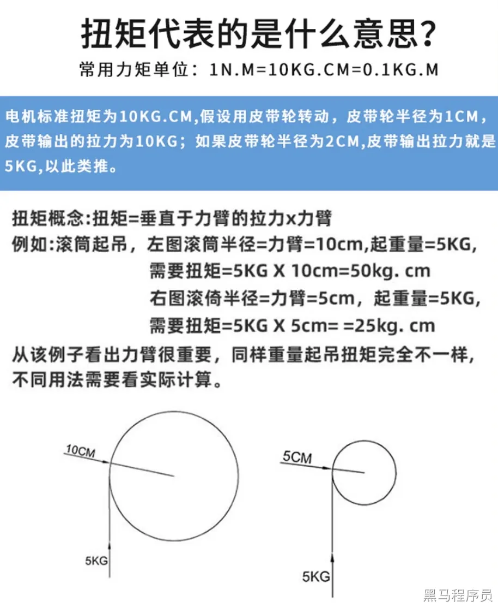
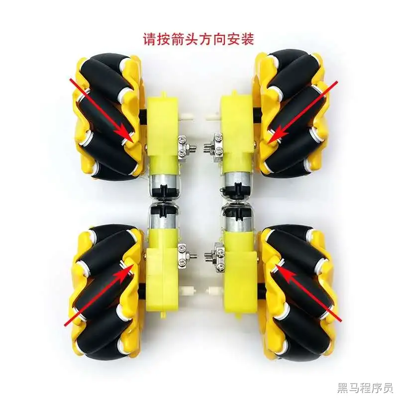

<!DOCTYPE lake>
<h1 data-lake-id="article-title" id="article-title"><span data-lake-id="u6896635a" id="u6896635a" style="color: var(--yq-text-primary)">电机模块</span></h1><p data-lake-id="udd23c0a4" id="udd23c0a4"><span class="lake-fontsize-11" data-lake-id="u9192607e" id="u9192607e" style="color: var(--yq-text-primary)">采用N20电机，电机上有两个触点，通电就可以转动。我们采用的N20电机的额定电压为6V，最大转速是300RPM（300圈/分钟）</span><span class="lake-fontsize-11" data-lake-id="u831be1c5" id="u831be1c5" style="color: var(--yq-text-primary)"><br/><br/></span></p><p data-lake-id="u125df31a" id="u125df31a"></p><p data-lake-id="uef42b123" id="uef42b123"><span class="lake-fontsize-11" data-lake-id="uda82b598" id="uda82b598" style="color: var(--yq-text-primary)"><br/><br/></span></p><p data-lake-id="u015740f1" id="u015740f1"></p><p data-lake-id="u4a761214" id="u4a761214"><span class="lake-fontsize-11" data-lake-id="u1d386ab1" id="u1d386ab1" style="color: var(--yq-text-primary)"><br/><br/></span></p><p data-lake-id="u7fe7fe48" id="u7fe7fe48"></p><p data-lake-id="uaba0b9fa" id="uaba0b9fa"><span class="lake-fontsize-11" data-lake-id="u7d083606" id="u7d083606" style="color: var(--yq-text-primary)"><br/>通电的时候，无论正接还是反接，电机都可以转动，只是转动的方向不同。<br/>注意：<br/>●减速电机请尽量避免堵转或者超负载，否则会出现崩齿轮损耗。<br/>●正反转控制时，不要让齿轮在传动中立刻切换转向，建议在完全停止后切换转向<br/>两个电机分别对应一个电机驱动芯片，通过电机驱动芯片进行驱动电机转动。<br/>电机驱动芯片又是通过两路pwm来控制的。<br/></span><strong><span class="lake-fontsize-11" data-lake-id="u63162cd3" id="u63162cd3" style="color: #DF2A3F">两个引脚分别对应了采用互补的方式，可以驱动电机，达到电机可以正转反转的效果。</span></strong><span class="lake-fontsize-11" data-lake-id="u34956977" id="u34956977" style="color: var(--yq-text-primary)"><br/>电机驱动帮助我们解决了正反转动态切换的问题<br/></span><strong><span class="lake-fontsize-14" data-lake-id="u8ad52251" id="u8ad52251" style="color: var(--yq-text-primary)">N20电机参数</span></strong><span class="lake-fontsize-14" data-lake-id="ucd4167f0" id="ucd4167f0" style="color: var(--yq-text-primary)"><br/><br/></span></p><p data-lake-id="u265a2720" id="u265a2720"></p><p data-lake-id="ucbfb51db" id="ucbfb51db"><span class="lake-fontsize-11" data-lake-id="ue8b997d4" id="ue8b997d4" style="color: var(--yq-text-primary)"><br/></span><strong><span class="lake-fontsize-14" data-lake-id="u04de1508" id="u04de1508" style="color: var(--yq-text-primary)">扭矩</span></strong><span class="lake-fontsize-14" data-lake-id="u8ac32368" id="u8ac32368" style="color: var(--yq-text-primary)"><br/><br/></span></p><p data-lake-id="u8b8192cd" id="u8b8192cd"></p><p data-lake-id="ub1bd5c1d" id="ub1bd5c1d"><span class="lake-fontsize-11" data-lake-id="u1a05b721" id="u1a05b721" style="color: var(--yq-text-primary)"><br/></span><strong><span class="lake-fontsize-16" data-lake-id="u3da6bb18" id="u3da6bb18" style="color: var(--yq-text-primary)">麦克纳姆轮</span></strong><span class="lake-fontsize-11" data-lake-id="ub98238d6" id="ub98238d6" style="color: var(--yq-text-primary)"><br/><br/></span></p><p data-lake-id="uadb4d17a" id="uadb4d17a"></p><p data-lake-id="u9342f234" id="u9342f234"><span class="lake-fontsize-11" data-lake-id="udb9c4f6f" id="udb9c4f6f" style="color: var(--yq-text-primary)"><br/></span><strong><span class="lake-fontsize-18" data-lake-id="ucc06bd31" id="ucc06bd31" style="color: var(--yq-text-primary)">移动方式</span></strong><span class="lake-fontsize-18" data-lake-id="u2b1d621a" id="u2b1d621a" style="color: var(--yq-text-primary)"><br/></span><span class="lake-fontsize-11" data-lake-id="u4a4db523" id="u4a4db523" style="color: var(--yq-text-primary)"><br/></span><strong><span class="lake-fontsize-14" data-lake-id="u167a2b9b" id="u167a2b9b" style="color: var(--yq-text-primary)">前进和后退</span></strong><span class="lake-fontsize-14" data-lake-id="u10222377" id="u10222377" style="color: var(--yq-text-primary)"><br/><br/></span></p><p data-lake-id="ued3dfc29" id="ued3dfc29"></p><p data-lake-id="u4ddad007" id="u4ddad007"><span class="lake-fontsize-11" data-lake-id="ub54bc391" id="ub54bc391" style="color: var(--yq-text-primary)"><br/></span><strong><span class="lake-fontsize-14" data-lake-id="uf2098f21" id="uf2098f21" style="color: var(--yq-text-primary)">左前右前</span></strong><span class="lake-fontsize-14" data-lake-id="ueba2611f" id="ueba2611f" style="color: var(--yq-text-primary)"><br/><br/></span></p><p data-lake-id="u17fbf079" id="u17fbf079"></p><p data-lake-id="u3f7ba496" id="u3f7ba496"><span class="lake-fontsize-11" data-lake-id="u2f03206d" id="u2f03206d" style="color: var(--yq-text-primary)"><br/></span><strong><span class="lake-fontsize-14" data-lake-id="uf193d90f" id="uf193d90f" style="color: var(--yq-text-primary)">左平移右平移</span></strong><span class="lake-fontsize-14" data-lake-id="ue24bc313" id="ue24bc313" style="color: var(--yq-text-primary)"><br/><br/></span></p><p data-lake-id="uf2b18600" id="uf2b18600"></p><p data-lake-id="u53be6475" id="u53be6475"><span class="lake-fontsize-11" data-lake-id="ub67b60cb" id="ub67b60cb" style="color: var(--yq-text-primary)"><br/></span><span class="lake-fontsize-14" data-lake-id="u16743be5" id="u16743be5" style="color: var(--yq-text-primary)"><br/></span><strong><span class="lake-fontsize-14" data-lake-id="u52964063" id="u52964063" style="color: var(--yq-text-primary)">左后右后</span></strong><span class="lake-fontsize-14" data-lake-id="u323c5bd8" id="u323c5bd8" style="color: var(--yq-text-primary)"><br/><br/></span></p><p data-lake-id="u5d7c6efc" id="u5d7c6efc"></p><p data-lake-id="u10a0c682" id="u10a0c682"><span class="lake-fontsize-11" data-lake-id="u3888367d" id="u3888367d" style="color: var(--yq-text-primary)"><br/></span><strong><span class="lake-fontsize-14" data-lake-id="ud68b877a" id="ud68b877a" style="color: var(--yq-text-primary)">顺时针逆时针旋转</span></strong><span class="lake-fontsize-14" data-lake-id="u8b2ba4d3" id="u8b2ba4d3" style="color: var(--yq-text-primary)"><br/><br/></span></p><p data-lake-id="ufd1a5d2d" id="ufd1a5d2d"></p>